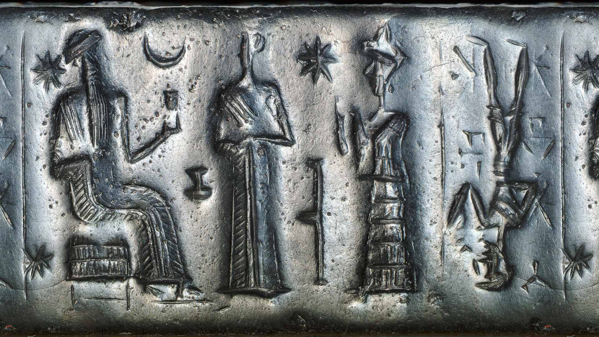
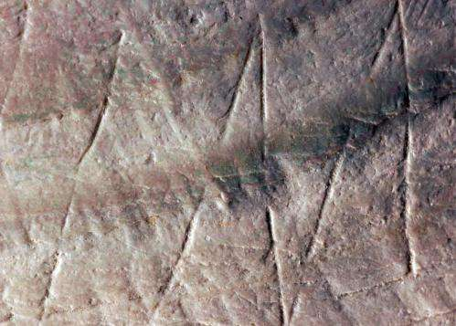
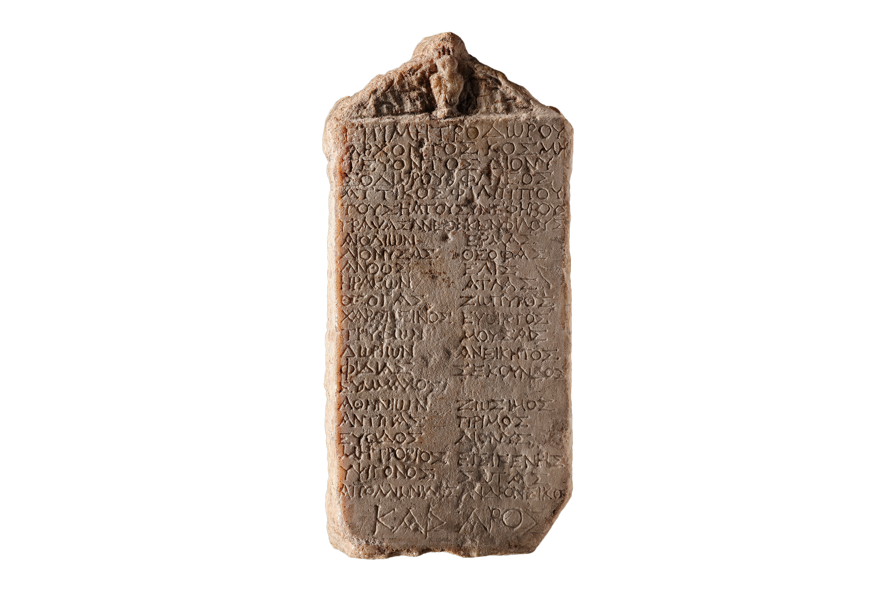
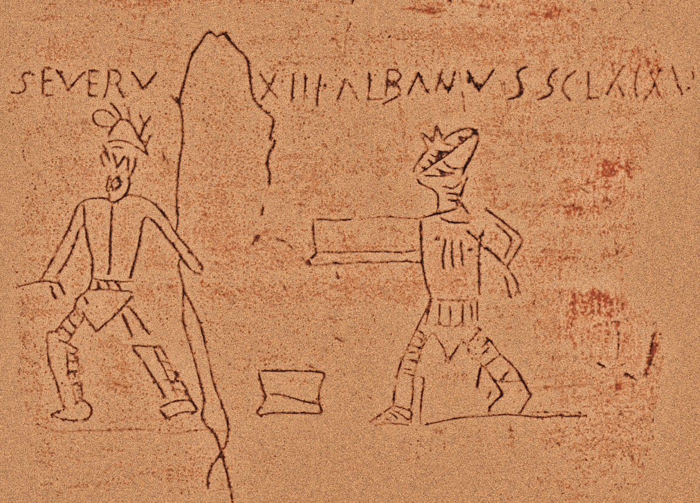

Engraving is one of the oldest ways humans have altered a surface to create an image or record information. Long before paper, printing, or photography, people carved directly into stone, bone, clay, and other durable materials. Some of the earliest known engraved objects come from prehistoric societies, including engraved bones, stones, and cave surfaces. In caves such as Chauvet in southern France, prehistoric artists used stone tools to incise images of animals directly into the rock. Rather than adding pigment to the surface, engraving created an image by cutting into it. The resulting line was therefore both an image and a physical alteration of the material itself.


In ancient Mesopotamia, engraving became closely connected to identification and administration. By the fourth millennium BCE, cylinder seals were being carved with images, symbols, and eventually cuneiform inscriptions. When a carved cylinder was rolled across wet clay, its design was transferred onto the surface, creating an impression that could identify a person, authorize a transaction, or mark ownership. The engraved object could therefore carry an individual’s identity beyond their physical presence. A name or symbol was no longer only something that could be seen or spoken; it became something embedded in an object and recognizable through repeated use.
Engraved writing also became increasingly important in the ancient Mediterranean world. Egyptians, Greeks, and Romans carved names, religious dedications, laws, records, and commemorations into stone and other materials. Public inscriptions were often deliberately placed where they could be seen and preserved. Funerary inscriptions were particularly concerned with names: carving a person’s name into a tomb or monument helped maintain their identity after death. Stone offered an appearance of permanence, allowing words and names to survive long after the person who commissioned or created them was gone.


Not all ancient inscriptions were monumental, however. At Pompeii and Herculaneum, people scratched names, drawings, greetings, jokes, political messages, declarations of affection, and other everyday communications into walls and architectural surfaces. These inscriptions provide evidence of ordinary people who otherwise left very little record of their lives. A name scratched into a wall could be informal and temporary in intention, yet become unexpectedly permanent through preservation. The same surface that carried official inscriptions could also carry the small, personal marks of people simply passing through.